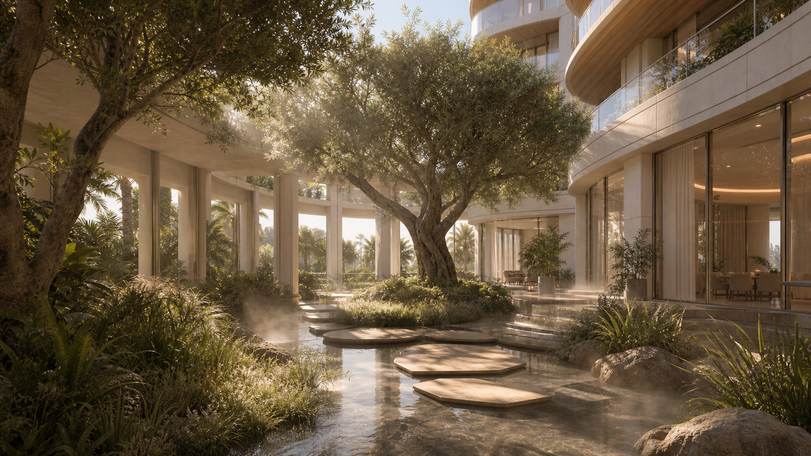
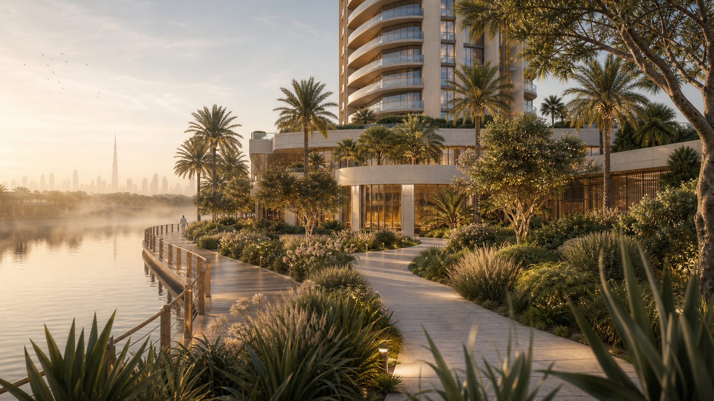

Quietly luminous
Deep reveals and filtered daylight create interiors that remain soft from dawn to sunset.

Architecture shaped by nature
Water, greenery and crafted architecture meet in a private waterfront world designed around wellbeing.
Each arrival, courtyard and residence is composed as part of one continuous landscape—tactile, shaded and timeless.

A private green world
Native planting, reflective water and generous shaded paths turn everyday movement into a restorative ritual.
Deep reveals and filtered daylight create interiors that remain soft from dawn to sunset.
Limestone, oak and bronze bring warmth, permanence and a distinctly residential character.
Greenery and water are not decoration; they shape privacy, shade and the rhythm of arrival.